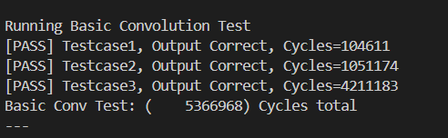
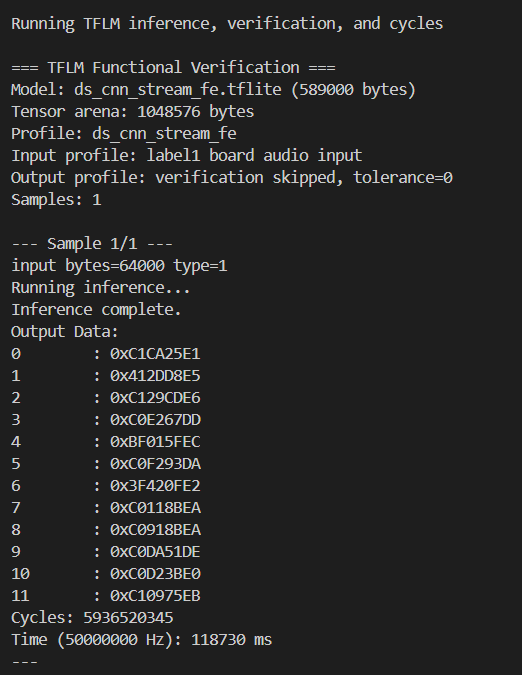

Lab 1 : Aligned AXI Data on SIMD#
Goal of this lab#
Introduction#
In this lab, you will focus on AXI single transation and SIMD MAC operands. Then, we use these custom instruction in convolution part to reduce runtime of model reference. We use ds_cnn_stream_fe model to compare convolution between our accelerated version and orignal software-only version.
Basic Exercise - AXI Single Transaction & SIMD - 60%#
1. AXI Single Transaction#
In this part, the goal is to enable the NPU to access data directly through the AXI4 interface instead of relying on the CPU’s LSU (Load/Store Unit).
The AXI4 master interface of the NPU is provided in Platform\hw\srcs\NPU.v. The NPU must control this interface to issue AXI4 read requests, receive the requested data from memory, and return the data through the CPU interface.
The implementation should handle the AXI4 read transaction correctly, including address and data handshaking. The returned data should then be provided to the CPU through the NPU’s existing CPU-side interface, allowing the NPU to directly fetch operands from memory without requiring the CPU’s LSU to perform the load operation.
Important
Please follow below table to design NPU AXI read/write instruction.
Funct3 |
Funct7 |
Software Function |
Description |
|---|---|---|---|
|
|
|
Issue a 4-byte AXI4 read request and return the received data |
|
|
|
Issue a 4-byte AXI4 write request with the provided data |
TODO:
Control AXI interface in
NPUto make it can finish a single DRAM transation when it receive correspondingfunct3.Return value from
NPU_outto CPU if receiving reading request.
Note
If you want more information about custom instruction of software, you can trace these files, “accel_ops.h”, “accel_ops.cc”, and “accel_test.cc”.
Verification:
Run “Accelerator functional test” in project menu.
If result show “AXI read” and “AXI write” pass, this part is correct.
Correct Result (Test 2 and 3):
>>> STARTING ACCELERATOR FUNCTIONAL TEST...
[TEST 1/5] Scalar Math... PASS
[TEST 2/5] AXI Write... PASS
[TEST 3/5] AXI Read... PASS
[TEST 4/5] Unaligned AXI Read... PASS
[TEST 5/5] Unaligned AXI Write... PASS
[SUCCESS] All functional tests passed!
---
2. SIMD MAC#
The main principle of SIMD (Single Instruction, Multiple Data) instructions involves processing multiple data with a single instruction. In the int8 convolution, each filter and input value spans 8 bits. Utilizing a custom CFU operation, we can employ two 32-bit wide registers. This setup enables the execution of four simultaneous MAC (Multiply-Accumulate) operations in a single cycle.
7 bits
+--------------+
funct7 = | (bool) reset |
+--------------+
int8_t int8_t int8_t int8_t
+----------------+----------------+----------------+----------------+
in0 = | input_data[0] | input_data[1] | input_data[2] | input_data[3] |
+----------------+----------------+----------------+----------------+
int8_t int8_t int8_t int8_t
+----------------+----------------+----------------+----------------+
in1 = | filter_data[0] | filter_data[1] | filter_data[2] | filter_data[3] |
+----------------+----------------+----------------+----------------+
int32_t
+----------------------------------------------------------------------+
output = | output + (input_data[0, 1, 2, 3] + offset) * filter_data[0, 1, 2, 3] |
+----------------------------------------------------------------------+
Note
You may choose any
funct3andfunct7values to define your own MAC instruction, except for thefunct3reserved for the AXI read and write instructions.You can also define your instruction to accelerated convolution function in next step.
Hint
This part does not have any test. You can write your test function and add it into user menu to test correction of SIMD instruction.
TODO: Make
NPUcan run custom SIMD instruction if it receive specificfunct3andfunct7, and return output value byNPU_outto CPU.
3. conv.h#
In this part, you need to modify conv.h and change ConvPerChannel function into accelerated version. Please use AXI read function of NPU to get input data and filter, and use your MAC instruction in previous part.
Note
You can find ConvPerfChannel function in Platform\sw\tflm_patches\tensorflow\lite\kernels\internal\reference\integer_ops\conv.h
Replace some parts of original operations with cfu_op, and don’t forget to add #include "cfu.h" and #include "cbo.h" in the file.
for (int out_channel = 0; out_channel < output_depth; ++out_channel) {
...
int32_t acc =
for (int filter_y = 0; filter_y < filter_height; ++filter_y) {
const int in_y = in_y_origin + dilation_height_factor * filter_y;
for (int filter_x = 0; filter_x < filter_width; ++filter_x) {
const int in_x = in_x_origin + dilation_width_factor * filter_x;
// Zero padding by omitting the areas outside the image.
const bool is_point_inside_image =
(in_x >= 0) && (in_x < input_width) && (in_y >= 0) &&
(in_y < input_height);
if (!is_point_inside_image) {
continue;
}
for ( ) {
}
}
}
...
}
Important
You only allow to get input and filter data by NPU AXI read instruction (cfu_op1) which you finsih in first step.
Hint
Because of directly accessing memory without D-cache, you needs to consider about cache coherence problem. Our platform supports two D-cache operation, cbo_clean and cbo_invalidate. You can use software function in cbo.h to control D-cache.
TODO:
Use the AXI read function to get data and filter values.
Maintain cache coherence using
CBOinstructions to ensure AXI reads the latest data.Replace the software computation in
ConvPerChannelwith SIMD instructions to reduce reference execution time.
4. Check Result Correction#
You can run “Basic Convolution Test” in project menu. This test only have have address aligned condition.
{kind=link}

If you pass all testcase, you can get full score of basic part.
Adavance Exercise 1 - AXI Address Aligned - 15%#
Because of 8-bit element type of model, some AXI reading request may use unaligned address data, and unaligned address may cause AXI trigger exception. Therefore, we need to make our NPU to handle request with unaligned address data.
Hint
We can divide single DRAM request into two DRAM request, and combine two request into one 4 byte data transition.
For example, NPU want to read 4 bytes data in 0x6000_0002. It needs to read 0x6000_0000 and 0x6000_0004 data. Then, combine higher two byte of first read and lower two byte of second read.
TODO:
Add address alignment control to the AXI single transaction.
Ensure
NPUcan get correct result if it receive request with unaligned address.
Verfication:
Run “Accelerator functional test” in project menu.
If you pass “Unaligned AXI Read” and “Unaligned AXI Write”, your implement is correct.
Correct Result (Test 4 and 5):
>>> STARTING ACCELERATOR FUNCTIONAL TEST...
[TEST 1/5] Scalar Math... PASS
[TEST 2/5] AXI Write... PASS
[TEST 3/5] AXI Read... PASS
[TEST 4/5] Unaligned AXI Read... PASS
[TEST 5/5] Unaligned AXI Write... PASS
[SUCCESS] All functional tests passed!
---
Adavance Exercise 2 - Running TFLM Model Inference - 10%#
In this part, We use ds_cnn_stream_fe as our benchmark model. Then, compare runtime cycles to show performance improve on accelerated version convolution.
Note
You can download .tflite file and input data from below links.
TODO:
Add .tflite, profile.cc, and input data into platform
Register TFLM Ops in
tflm_ops.cc, and modifykTflmResolverOpCountintflm_ops.hwith number of register op.Set parameter in
project.mkfile (MODEL_FILE,MODEL_PROFILE,TENSOR_ARENA_SIZE), and add file of input data intoAPP_EXTRA_SRCS.Add below code to show outupt data after inference complete.
Select “TFLM Inference, Verification, and Cycles” from the project menu.
Compare result between orignal version and accelerated version.
Hint
You can use website in reference to know what TFLM OP will be used in model.
You can set
TENSOR_ARENA_SIZEas 1MB to avoidYou can see your output is same as orignal version if your implement is correct.
// Platform/sw/app/tflm_runner.cc
/*...*/
printf("Inference complete.\n");
// show value of output data.
printf("Output Data:\n");
uint32_t* out_raw_bits = (uint32_t*)output->data.f;
for (int i = 0; i < 12; i++) {
printf("%-9d: 0x%08X\n", i, out_raw_bits[i]);
}
//
/*...*/
Important
If your result is match than original version convolution and runtime cycles is less, you can get score in this part.
This is result of label1 output:
{kind=link}

Question in Demo - 15%#
You will be asked several questions about the concepts covered in this lab and your NPU design.
Submission#
Important
TAs should be able to run your project without any modification. If TAs cannot compile or run your code, you can’t get any scores even if you passed the DEMO. Also, PLAGIARISM is not allowed.
Reference#
Netron : You can visulaize the layer graph of .tflite file by this website.